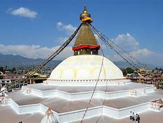

6 . Boudhanath
|  |
| district |
kathmandu |
| affiliation |
Buddhism |
| location |
boudha, Kathmandu |
| type |
stupa |
| date of established |
after 600 A.D. |
The first stupa at Boudhanath was built sometime after AD 600, when the Tibetan king, Songtsen Gampo, converted to Buddhism. In terms of grace and purity of line, no other stupa in Nepal comes close to Boudhanath.Situated 8 km to the east of downtown Kathmandu, Boudha, is one of the UNESCO World Heritage sites and one of the most imposing landmarks in Kathmandu.
Visible as soon as you land at the Tribhuvan International Airport, it is the largest stupa in the Kathmandu Valley. The 36-meter-high stupa of Boudha is massive and dominates the skyline in the area. With countless monasteries around it, Boudha is the center of Tibetan Buddhism in Nepal.
On each side are the all-seeing-eyes of the Buddha symbolizing awareness. The canopy has 13 stages. At ground level there is a brick wall that has 147 niches and 108 images of the meditational Buddha inset behind copper prayer wheels.